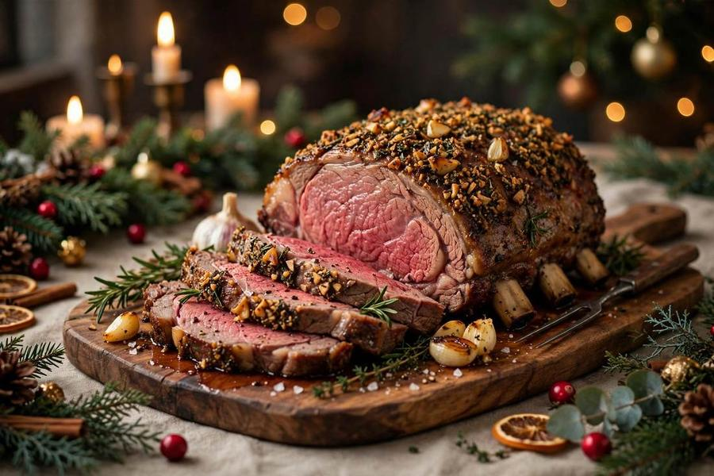

Christmas Prime Rib Recipes
📌 Save to Pinterest
A Christmas prime rib is the kind of main dish that turns dinner into an occasion: one big roast, carved at the table, feeds a crowd and looks like a celebration before anyone takes a bite. This roundup gathers twelve ways to cook it — classic herb-crusted roasts, slow and low methods that keep the meat tender, and bolder crusts for cooks who want something different this year. Pick the one that fits your oven, your schedule, and your table.
How to pick the right prime rib
A prime rib is a beef rib roast, sold bone-in or boneless. A bone-in roast looks generous on the platter and the bones add flavor as it roasts; a boneless roast is easier to carve and store. Look for good marbling — the white flecks of fat through the meat are what keep a prime rib juicy. Buy by the headcount: a thick slice or two per person, with a little extra if you want leftovers, and ask the butcher to trim the fat cap and tie the roast so it cooks evenly. Let the roast rest before carving so the juices settle and the slices stay pink and moist.
Good to know: Everything is written in American English, and measurements use US customary units — cups, tablespoons, and Fahrenheit — for cooks in the United States. Always use a food thermometer to confirm the roast is cooked to the doneness you want, and let it rest before slicing.
Classic prime rib roasts
These are the roasts most people picture when they think of Christmas dinner: a dark, savory crust, a pink center, and a platter that stops the conversation.
1. Classic Garlic Herb Prime Rib
The classic. Garlic, rosemary, and thyme rubbed over the roast with olive oil, roasted until the outside is dark and fragrant and the inside stays pink and juicy. It is the roast to make when you want the table to look and taste exactly like Christmas. Serve it with horseradish sauce and something green to cut the richness.
2. Salt-Crusted Prime Rib
A thick salt crust seals the roast as it cooks, keeping the juices in and seasoning the meat all the way through. The crust is cracked off before carving, leaving a beautifully seasoned roast underneath. This is a good pick if you like a clean, beefy flavor with nothing competing against it.
3. Rosemary and Thyme Prime Rib
Fresh rosemary and thyme, chopped fine and pressed into the roast with garlic and olive oil, give this prime rib a woodsy, holiday flavor that fills the kitchen as it roasts. The herbs crisp at the edges and make a crust worth eating on its own. It pairs well with roasted potatoes and a simple salad.
4. Herb Butter Prime Rib
Softened butter mixed with herbs and garlic, spread thickly over the roast, melts and bastes the meat as it cooks. The butter browns into a savory crust and the drippings make a sauce worth spooning over the slices. This is the richest of the classic roasts — serve it with lighter sides so the table stays balanced.
Slow and low methods
When you want the most tender roast possible — and the most forgiving timing on a busy Christmas day — these methods do the work slowly and gently.
5. Reverse-Sear Prime Rib
The roast goes into a low oven first, cooking gently until it is nearly done, then gets a short blast of high heat at the end for a dark, crisp crust. The result is pink from edge to edge, with almost no gray band. It takes patience, but it is the most reliable way to a perfectly even roast.
6. Slow-Roasted Prime Rib
A low oven and plenty of time do for prime rib what they do for any big roast: steady, even heat and no drying out. The roast comes out tender and evenly cooked, and the timing is forgiving if dinner runs late. This is a good method for a first prime rib, because there is very little that can go wrong.
7. Smoked Prime Rib
For the cook with a smoker, wood smoke gives prime rib a flavor no oven can match — smoky, rich, and a little rustic. The roast picks up color and a gentle smoke ring while staying juicy inside. It is the roast for a table that loves barbecue flavors, and it is excellent with smoky sides like baked beans or grilled vegetables.
Bold and savory crusts
For tables that want a roast with more personality — sharp, peppery, or a little boozy — these five are the ones to try.
8. Horseradish-Crusted Prime Rib
Horseradish and beef are a classic pair, and here the horseradish goes right on the roast: a sharp, pungent crust that cuts through the richness of the meat. It is the best choice if your guests love bold flavors, and it is wonderful cold the next day in sandwiches with extra horseradish sauce.
9. Peppercorn-Crusted Prime Rib
Cracked black peppercorns pressed into the roast make a crust with real bite — warm, spicy, and not very subtle. The pepper toasts as the roast cooks and gives every slice a little heat. Serve it with a creamy sauce on the side for guests who want to cool it down.
10. Bourbon-Glazed Prime Rib
Bourbon and beef are a natural pair: the bourbon adds warmth and a hint of caramel sweetness, and most of the alcohol cooks off in the oven, leaving the flavor behind. This is the roast for a grown-up table, and it is excellent with roasted sweet potatoes and green beans.
11. Mustard-Crusted Prime Rib
A mustard crust is the savory answer to the sweet glazes: sharp, tangy, and not very sweet at all. Dijon or whole-grain mustard mixed with herbs and a little garlic gives the roast a crust with bite. It is the best choice if your guests prefer savory food, and it pairs beautifully with roasted root vegetables.
12. Prime Rib with Au Jus
Not a crust at all, but a method: the roast is cooked simply, and the pan drippings are turned into a rich au jus for dipping. The thin, savory sauce is what makes this one special — every slice gets dunked, and the meat stays moist to the last bite. Serve it with crusty rolls for soaking up the jus.
What to serve with prime rib
Prime rib is rich and beefy, so the best sides are the ones that balance it: something creamy (mashed potatoes or a potato gratin), something green (roasted Brussels sprouts, green beans, or a simple salad), something starchy (Yorkshire pudding or crusty dinner rolls), and something sharp (horseradish sauce or a pickled vegetable). A small bowl of good mustard on the table covers the guests who want more tang. Keep the sides simple — the roast is the star, and the table should not fight it.
What to do with leftover prime rib
Leftover prime rib is one of the best parts of Christmas dinner. Slice it thin for sandwiches with horseradish sauce and onions, dice it into a beef and potato hash, stir it into a hearty beef soup, or serve it cold with mustard and pickles. Store sliced prime rib in the refrigerator and use it within a few days; freeze what you cannot use, in portions, so it thaws quickly later.
Keep exploring
- Browse the Lunch & Dinner roundups — mains for midday and evening tables.
- Browse all six categories — breakfast, lunch and dinner, desserts, air fryer, healthy recipes, and appetizers.
- More about the kitchen — what The Tasty Recipe Co is and how it works.
About the Editorial Team: This article was created by the editorial team behind The Tasty Recipe Co. The site publishes recipe roundups for home cooks, one at a time, with each article checked live before the next one begins. Learn more on our About page.
Recipe results can vary with ingredients, equipment, and technique. See our Disclaimer for food-safety and allergy notes.